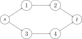
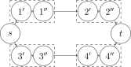

OI Wiki · prijevod · Teorija grafovaOI Wiki · translation · Graph theory
Razdvajanje vrhovaVertex splitting
Razdvajanje vrhova (vertex splitting) tehnika je modeliranja u teoriji grafova, često korištena u mrežnim tokovima za rješavanje problema s težinama vrhova ili ograničenjima protoka kroz vrhove, a često i u slojevitim grafovima.
Maksimalni tok s ograničenjima protoka na vrhovima
Ako vrhove pretvorimo u bridove, problem se može riješiti standardnim predloškom.
Vrh s ograničenjem protoka pretvaramo u sljedeći oblik: dio koji se sastoji od dvaju vrhova \(u,v\) i jednog brida \(\left\langle u,v \right\rangle\). Vrh \(u\) prima sve bridove koji u izvornom grafu iz drugih vrhova ulaze u taj vrh, a iz vrha \(v\) izlaze svi bridovi koji u izvornom grafu iz tog vrha vode u druge vrhove. Ograničenje protoka brida \(\left\langle u,v \right\rangle\) jednako je ograničenju protoka tog vrha u izvornom grafu; zatim se primijeni predložak i zadatak je riješen. To je osnovna ideja razdvajanja vrhova.
Ako izvorni graf izgleda ovako:

graf nakon razdvajanja vrhova izgleda ovako:

Najkraći put u slojevitom grafu
Najkraći put u slojevitom grafu, npr.: \(k\) puta smijemo besplatno proći jednim bridom; nađi najmanji ukupni trošak. Za takve zadatke možemo primijeniti ideju sličnu DP-u: neka \(\text{dis}_{i, j}\) označava najkraći put od početnog vrha do vrha \(i\) uz iskorištenih \(j\) besplatnih prolazaka. Očito se niz \(\text{dis}\) može računati ovako:
\(\text{dis}_{i, j} = \min\{\min\{\text{dis}_{from, j - 1}\}, \min\{\text{dis}_{from,j} + w\}\}\)
pri čemu \(from\) označava prethodnik (roditelja) vrha \(i\), a \(w\) težinu brida kojim trenutno prolazimo. Kad je \(j - 1 \geq k\), vrijedi \(\text{dis}_{from, j}\)=\(\infty\).
Zapravo, ovaj DP odgovara razdvajanju svakog vrha na \(k+1\) vrhova, pri čemu svaki novi vrh predstavlja vrh izvornog grafa u koji smo stigli nakon određenog broja besplatnih prolazaka. Drugim riječima, vrh \(u_i\) predstavlja dolazak u vrh \(u\) nakon \(i\) iskorištenih besplatnih prolazaka.
„JLOI2011” Zračne linije
Zadatak: zadan je neusmjeren graf s \(n\) vrhova i \(m\) bridova; smiješ odabrati \(k\) cesta i proći njima besplatno. Nađi najmanji trošak puta od \(s\) do \(t\).
Ključni dio koda za referencu:
struct State { // struktura čvora prioritetnog reda
int v, w, cnt; // cnt je broj dosad iskorištenih besplatnih prolazaka
State() {}
State(int v, int w, int cnt) : v(v), w(w), cnt(cnt) {}
bool operator<(const State &rhs) const { return w > rhs.w; }
};
void dijkstra() {
memset(dis, 0x3f, sizeof dis);
dis[s][0] = 0;
pq.push(State(s, 0, 0)); // za dolazak u početni vrh ne treba besplatni prolazak, udaljenost je nula
while (!pq.empty()) {
const State top = pq.top();
pq.pop();
int u = top.v, nowCnt = top.cnt;
if (done[u][nowCnt]) continue;
done[u][nowCnt] = true;
for (int i = head[u]; i; i = edge[i].next) {
int v = edge[i].v, w = edge[i].w;
if (nowCnt < k && dis[v][nowCnt + 1] > dis[u][nowCnt]) { // može se proći besplatno
dis[v][nowCnt + 1] = dis[u][nowCnt];
pq.push(State(v, dis[v][nowCnt + 1], nowCnt + 1));
}
if (dis[v][nowCnt] > dis[u][nowCnt] + w) { // ne prolazi se besplatno
dis[v][nowCnt] = dis[u][nowCnt] + w;
pq.push(State(v, dis[v][nowCnt], nowCnt));
}
}
}
}
int main() {
n = read(), m = read(), k = read();
// autor obično numerira vrhove od 1 do n, a u ovom su zadatku numerirani od 0 do n - 1, pa to treba uskladiti
s = read() + 1, t = read() + 1;
while (m--) {
int u = read() + 1, v = read() + 1, w = read();
add(u, v, w), add(v, u, w); // u ovom su zadatku bridovi dvosmjerni
}
dijkstra();
int ans = std::numeric_limits<int>::max(); // početna vrijednost ans je najveći int
for (int i = 0; i <= k; ++i)
ans = std::min(ans, dis[t][i]); // uzmi najbolju od svih mogućnosti dolaska u odredište
println(ans);
}
Vertex splitting is a graph modeling technique, commonly used in network flow to handle problems with vertex weights or flow limits on vertices, and also commonly used in layered graphs.
Maximum flow with flow limits on vertices
If we turn vertices into edges, this problem can be solved with the standard template.
We transform a vertex with a flow limit into the following form: a part consisting of two vertices \(u,v\) and one edge \(\left\langle u,v \right\rangle\). Vertex \(u\) receives all edges that in the original graph go from other vertices into this vertex, and vertex \(v\) emits all edges that in the original graph go from this vertex to other vertices. The flow limit of the edge \(\left\langle u,v \right\rangle\) is the flow limit of the vertex in the original graph; then applying the template solves the problem. This is the basic idea of vertex splitting.
If the original graph looks like this:
then after splitting the vertices the graph looks like this:
Shortest path in a layered graph
Shortest path in a layered graph, e.g.: you may pass through an edge for free \(k\) times; find the minimum total cost. For such problems we can use a DP-like idea: let \(\text{dis}_{i, j}\) denote the shortest path from the start to vertex \(i\) after using \(j\) free passes. Clearly the \(\text{dis}\) array can be computed as follows:
\(\text{dis}_{i, j} = \min\{\min\{\text{dis}_{from, j - 1}\}, \min\{\text{dis}_{from,j} + w\}\}\)
where \(from\) denotes the predecessor (parent) of \(i\) and \(w\) denotes the weight of the edge currently traversed. When \(j - 1 \geq k\), \(\text{dis}_{from, j}\)=\(\infty\).
In fact, this DP is equivalent to splitting every vertex into \(k+1\) vertices, where each new vertex represents the original vertex reached after a different number of free passes. In other words, vertex \(u_i\) represents reaching vertex \(u\) after using \(i\) free passes.
「JLOI2011」Flight Routes
Problem: there is an undirected graph with \(n\) vertices and \(m\) edges; you may choose \(k\) roads to traverse at zero cost. Find the minimum cost from \(s\) to \(t\).
Reference core code:
struct State { // node struct of the priority queue
int v, w, cnt; // cnt is the number of free passes used so far
State() {}
State(int v, int w, int cnt) : v(v), w(w), cnt(cnt) {}
bool operator<(const State &rhs) const { return w > rhs.w; }
};
void dijkstra() {
memset(dis, 0x3f, sizeof dis);
dis[s][0] = 0;
pq.push(State(s, 0, 0)); // reaching the start needs no free pass, distance is zero
while (!pq.empty()) {
const State top = pq.top();
pq.pop();
int u = top.v, nowCnt = top.cnt;
if (done[u][nowCnt]) continue;
done[u][nowCnt] = true;
for (int i = head[u]; i; i = edge[i].next) {
int v = edge[i].v, w = edge[i].w;
if (nowCnt < k && dis[v][nowCnt + 1] > dis[u][nowCnt]) { // can pass for free
dis[v][nowCnt + 1] = dis[u][nowCnt];
pq.push(State(v, dis[v][nowCnt + 1], nowCnt + 1));
}
if (dis[v][nowCnt] > dis[u][nowCnt] + w) { // do not pass for free
dis[v][nowCnt] = dis[u][nowCnt] + w;
pq.push(State(v, dis[v][nowCnt], nowCnt));
}
}
}
}
int main() {
n = read(), m = read(), k = read();
// the author usually numbers vertices from 1 to n, while this problem numbers them from 0 to n - 1, so adjust
s = read() + 1, t = read() + 1;
while (m--) {
int u = read() + 1, v = read() + 1, w = read();
add(u, v, w), add(v, u, w); // edges are bidirectional in this problem
}
dijkstra();
int ans = std::numeric_limits<int>::max(); // ans starts at the maximum int
for (int i = 0; i <= k; ++i)
ans = std::min(ans, dis[t][i]); // take the best over all ways of reaching the destination
println(ans);
}